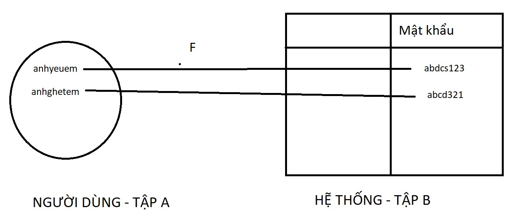

Blockchain là gì? Bạn nghe nhiều về Crypto, Bitcoin… nhưng có lẽ bạn không biết rằng Blockchain thực ra là công nghệ đã có hàng chục năm nay. Nhưng cũng như Machine Learning, AI, thì cho đến hiện nay nó mới là “trào lưu”. Chúng ta thấy nhan nhản đâu cũng là ML, AI, BlockChain, thậm chí có cả joke về vấn đề này:
Tuy nhiên, người ta thường nhìn nhận Blockchain dưới các góc độ Kinh tế, truyền thông, phong trào... Có lẽ ta cũng có nghe nhiều về Blockchain đấy, nhưng chỉ là những lời về sự đảm bảo công nghệ, về khả năng sinh lời, về xu hướng tương lai... Mà chưa biết bản chất khoa học của nó là gì. Có bao giờ bạn tự hỏi: Liệu nó chỉ là một trò Scam của CIA hay FBI, hay chỉ là pha thao túng truyền thông, thị trường của giới tài phiệt chứ nó không hề có ý nghĩa thực tiễn?
Chính vì thế, Series này sẽ giải thích cho bạn theo góc độ khoa học, cách một kỹ sư nghiên cứu, tìm ra Blockchain, cách tạo ra nó phiên bản đơn giản. Tất nhiên thuật toán sẽ không thể "bá đạo" như những công ty lớn, nhưng đủ để cung cấp gốc rễ và cái nhìn về thực sự thứ gì đang diễn ra và tại sao ta cần Blockchain. Từ đó, bạn sẽ hiểu chính xác nó là gì, nó hoạt động ra sao, từ đó quyền quyết định sẽ ở trong tay bạn. Chúng ta sẽ vào vai Bob - một kỹ sư với vốn toán cơ bản và hiểu biết lập trình thuật toán cơ bản, xuất phát từ bài toán thực tế, đến với sự hình thành và ứng dụng Blockchain.
~ Kiến thức là sức mạnh!
Một ngày đẹp trời, Bob đi học cấp 3 cũng như bao học sinh khác. Cô giáo giao cho Bob bài toán sau. Tìm x sao cho:
Chỉ đơn giản như vậy. Tất nhiên ai cũng biết x sẽ nhận giá trị 1 hoặc -1. Nhưng Bob nghĩ xa hơn! Anh ấy nghĩ: Có khi nào, hàm số thực chất là ảnh của một tập hợp trên một tập hợp khác?

Như hình bên, Bob thấy được đối với ánh xạ F, mỗi giá trị ở tập A sẽ nhận được một giá trị ở tập B, trường hợp này F chính là hàm số x bình phương cộng 1 như đã nói ở trên! Từ đó kết luận 1 ánh xạ gồm 3 yếu tố: Hàm ảnh F, Tập nguồn A, tập đích B.
Dựa vào thứ vừa nghĩ ra, Bob tổng kết được thực ra có một số loại ánh xạ như sau:
Loại 1: Toàn Ánh: Nếu coi tập A ở hình trên là Tập Số thực R, Tập B là tập Số thực dương R+, Thì ánh xạ như hình trên là toàn ánh, tức mọi giá trị ở A đều có giá trị ở B tương ứng, và mọi giá trị ở B đều có giá trị ở A tương ứng!
Loại 2: Đơn Ánh: Nếu coi tập A ở hình trên là tập R+, Tập B là tập Số thực dương R, thì với các x thuộc A khác nhau, ảnh qua F luôn cho kết quả khác nhau. Ví dụ (1)^2 + 1 khác (2)^2 + 1. Chú ý ở trường hợp loại 1, nó không phải đơn ánh do A có cả giá trị âm, khi đó (1)^2 +1 = (-1)^2 + 1 => Không là đơn ánh!
Loại 3: Song Ánh: Nếu nó là Đơn Ánh và Toàn Ánh! khi đó, A là R+, B là R+, thì ánh xạ là Song Ánh!
Bob cảm thấy thật vĩ đại. Có vẻ như chàng Bob của chúng ta vừa cao siêu hoá khái niệm hàm số, từ đó Bob muốn có được một cái gì đó ứng dụng luôn thứ mình vừa làm. Và Bob đã xây dựng hệ thống đầu tiên của mình!
Cảm thấy không gì cản được mình, Bob muốn lập ra một hệ thống đăng nhập người dùng bảo mật nhất thế giới để cạnh tranh với NASA, GOOGLE! Kiến trúc Bob đề ra sẽ là:
Bạn thấy sao? Nó khá giống với hình ảnh ánh xạ bên trên phải không? Chính xác! Toàn bộ hệ thống của Bob là hệ thống Song ánh (Thứ mà Bob vừa phức tạp hoá vấn đề ở trên!), và nó sẽ cải tiến hơn với hệ thống cũ là, nếu hacker hack được vào hệ thống, thì họ sẽ chỉ biết được mật khẩu dưới dạng "abdcs123", chứ không thể biết được mật khẩu là "anhyeuem"! Thật tuyệt vời!
Vui mừng chưa được bao lâu, Bob bỗng giật mình nhận ra 2 lỗ hổng chính của hệ thống, điều đã khiến anh khóc suốt đêm:
1: Biết đâu bằng một cách nào đó Hacker dựa vào Giá trị "abdcs123" và hàm F truy ngược lại được mật khẩu "anhyeuem" thì sao? Giống cái cách mà Bob giải bài toán cô giáo cho: Biết F = x^2 + 1 = 2, Bob đã suy luận lại được x = 1 đó!
2: Giả sử hàm F của Bob đủ tốt và không giải ngược được thì cũng không vấn đề! Hacker nếu chiếm được quyền điều khiển hệ thống, thì chì cần thay thế "abdcs123" bằng một chuỗi hacker tự tạo, ví dụ hacker thay bằng F(anhghetem), tức "abcd321". Khi đó, hacker đã chiếm được quyền điều khiển tài khoản mà không cần biết mật khẩu "anhyeuem" cũng như không cần giải ngược hàm số để tìm x!
Quá đau đầu, Bob đành giải quyết từng vấn đề một. Xuất phát là vấn đề đầu tiên: giải ngược hàm số!
Với giải ngược Hàm số, Bob muốn tìm ra một hàm số có 2 đặc tính sau:
- Với mỗi giá trị x, F(x) sinh ra khác nhau hoàn toàn và ngẫu nhiên. Tức ví dụ "anhyeuem" và "anhghetem" cần được mã hoá thành các chuỗi ngẫu nhiên, chứ không được trùng nhau, gần trùng nhau, hoặc theo quy luật! Vì nếu theo quy luật, sẽ dễ dàng bị hacker dùng xác suất phá giải. Ví dụ, ta chuyển chữ a thành một chữ khác, khi đó tỷ lệ xuất hiện chữ a cao, hacker chỉ cần tìm xem tỷ lệ xuất hiện chữ nào cao trong bản mã của ta, sẽ dễ dàng tìm ra chữ nào đại diện cho chữ a!
- Việc giải F(x) để tìm ra x là gần như bất khả thi, và phương pháp nhanh nhất là Brute-force, tức thử từng trường hợp (nhập x có Fx, khi nào Fx trùng với bản mã ta kết luận đã tìm ra x). Khi brute-force với tất cả các chữ cái và độ dài mật khẩu, thời gian có thể mất đến hàng tỷ tỷ năm!
Với 2 đặc tính trên, Bob kết luận những hàm nào song ánh, có 2 đặc tính đó sẽ là hàm phù hợp để đưa vào hệ thống của mình và giải quyết vấn đề thứ nhất! Khi đó, Hàm số mà không thể giải ngược được gọi là HÀM MỘT CHIỀU. Có được HÀM MỘT CHIỀU, dù cho hacker có lấy được bản ghi F(x) trong hệ thống cũng chẳng thể nào biết được mật khẩu ta là gì để đăng nhập, do có giải ngược được F(x) để tìm x đâu !
Sau các nghiên cứu và tìm tòi, Bob tìm ra một hàm số thoả mãn các điều kiện đó, và Bob gọi đó là hàm HASH ! Bob rất vui mừng và không thể chờ lâu hơn nữa để triển khai hàm HASH trong hệ thống của mình!
Đón đọc phần 2: Hàm HASH